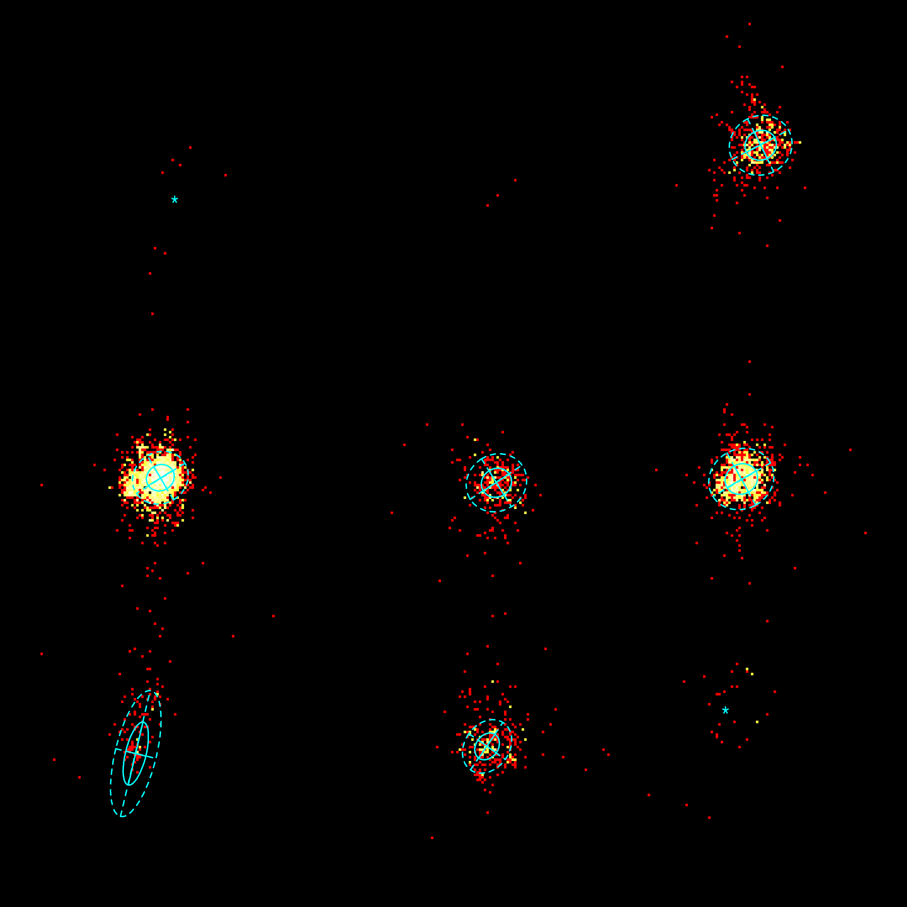
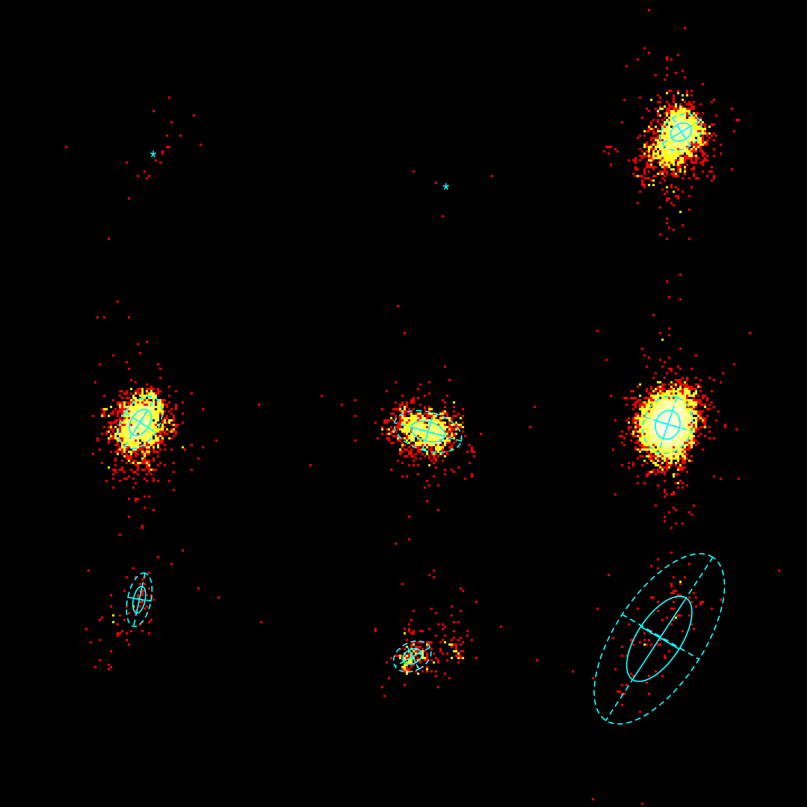
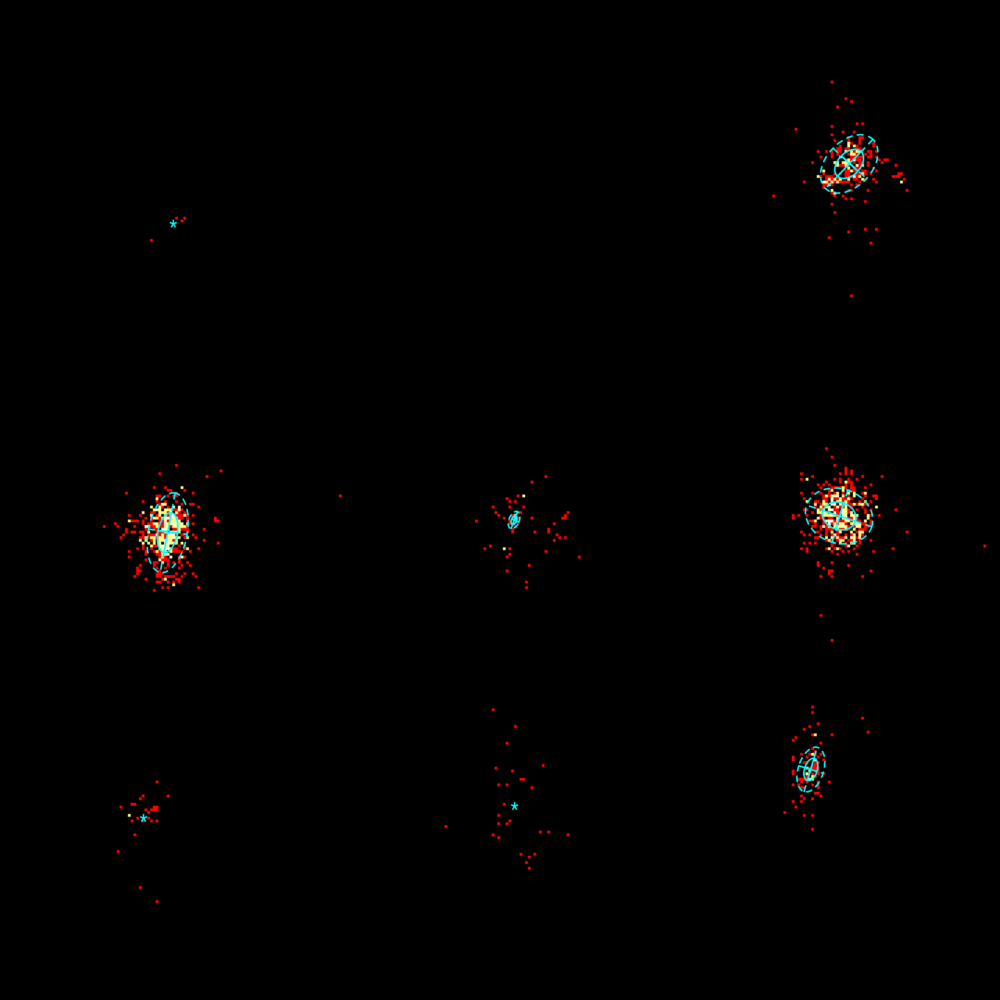

x-axis: χ1, [0,360]
y-axis: χ2, [0,360]
solid ellips: 1 standard deviation from the mean
dotted ellips: 2 standard deviations from the mean
'+': fitted mean when at least one standard deviation is greater than 120 degrees (see Table below)
'*': mean when there are less than 50 data points
φ-ψ of an α-helix
φ-ψ of a β-strand
other φ-ψ
| *mean values without fitted distribution, because counts<50. | |||||||
| φ-ψ-angles of: | Section | mean χ1 | mean χ2 | sd1 | sd2 | θ | counts |
|---|---|---|---|---|---|---|---|
| α-helix | 1 | 69.412* | 280.822* | - | - | - | 8 |
| α-helix | 2 | 198.716* | 283.073* | - | - | - | 3 |
| α-helix | 3 | 301.934 | 302.336 | 5.848 | 6.309 | 4.255 | 467 |
| α-helix | 4 | 63.655 | 170.37 | 5.08 | 5.67 | -5.245 | 1985 |
| α-helix | 5 | 197.065 | 168.371 | 5.594 | 6.157 | -2.129 | 296 |
| α-helix | 6 | 294.243 | 169.866 | 5.907 | 6.614 | 1.068 | 1103 |
| α-helix | 7 | 53.913 | 60.884 | 4.095 | 12.831 | -2.902 | 109 |
| α-helix | 8 | 193.348 | 63.734 | 4.417 | 5.702 | 3.758 | 290 |
| α-helix | 9 | 288.01* | 78.13* | - | - | - | 32 |
| β-strand | 1 | 68.358* | 291.262* | - | - | - | 21 |
| β-strand | 2 | 199.066* | 276.769* | - | - | - | 4 |
| β-strand | 3 | 303.817 | 301.066 | 4.896 | 3.699 | 5.741 | 2389 |
| β-strand | 4 | 62.588 | 171.519 | 4.103 | 6.379 | -2.571 | 2125 |
| β-strand | 5 | 190.931 | 167.523 | 4.297 | 7.73 | -4.434 | 1279 |
| β-strand | 6 | 297.877 | 170.496 | 6.474 | 5.417 | 5.035 | 6242 |
| β-strand | 7 | 62.137 | 92.464 | 6.062 | 2.615 | 4.921 | 74 |
| β-strand | 8 | 183.955 | 67.149 | 3.14 | 4.434 | 1.098 | 279 |
| β-strand | 9 | 294.118 | 75.019 | 21.761 | 9.909 | -0.99 | 100 |
| other | 1 | 62.487* | 279.393* | - | - | - | 4 |
| other | 2 | - | - | - | - | - | 0 |
| other | 3 | 305.721 | 300.976 | 6.139 | 4.067 | 5.479 | 246 |
| other | 4 | 60.363 | 168.249 | 7.263 | 3.5 | -1.385 | 557 |
| other | 5 | 185.082 | 172.747 | 0.923 | 1.646 | -5.899 | 59 |
| other | 6 | 302.106 | 174.238 | 6.179 | 4.88 | -5.964 | 552 |
| other | 7 | 51.767* | 65.472* | - | - | - | 26 |
| other | 8 | 185.307* | 69.771* | - | - | - | 27 |
| other | 9 | 291.922 | 82.963 | 2.283 | 4.159 | 3.445 | 93 |